We visited Alabama back in February and couldn’t find much of a reason to stick around before continuing west. But a couple months ago, the Chamber of Commerce of the small town of Cullman, AL reached out to us and insisted that we come back for a real Alabama experience. We rarely say “no” to a good time so we found ourselves just 50 miles north of Birmingham for an outdoor adventure before heading home to Florida.
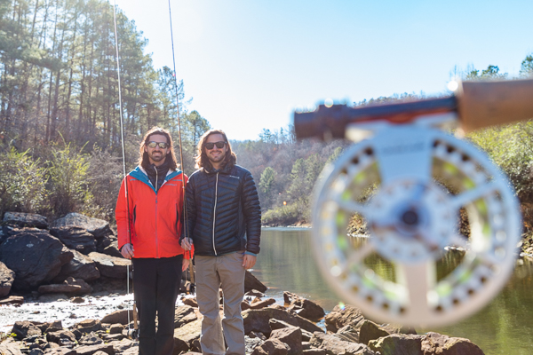
After getting our fair share of continental breakfast at a nearby Hampton Inn, we headed to Riverside Fly Shop. We met our guide for the day, Brandon, who also doubles as the owner of Riverside, Alabama’s only year-round Rainbow Trout fishery. We started off with a few casts upstream to get a feel for the river and our tackle. Growing up in Florida, we’re no strangers to fishing. Using the strength of our whole bodies to yank lips off fish is something we’ve been doing since a young age. But fly fishing is different. It’s less about power, beer, and luck and more about strategy, finesse, and patience.
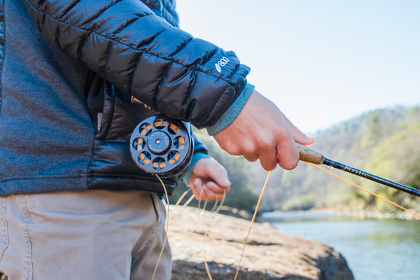
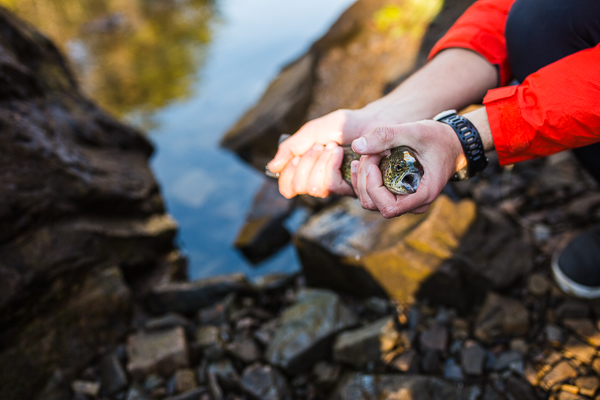
After totally blowing it trying to set the hook on a couple nibblers, I’d finally gotten the hang of the correct motions of roll casting and hook setting. Skills which I eventually found comes from a snappy flick of the wrist, not a spastic jerking of the entire torso. Justin seemed to get a hang of the proper technique quicker than I did and stripped in the first two fish of the day.
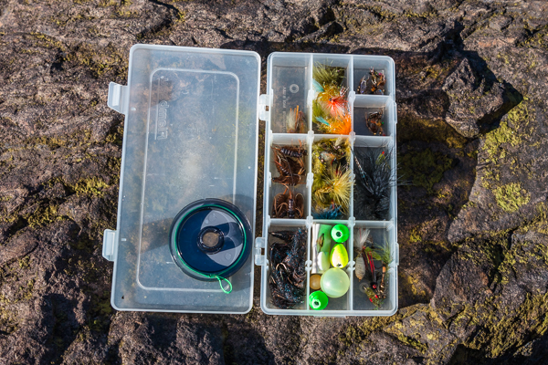
Brandon was extremely helpful in how he teaches. Instead of instructing us to do certain things without reason, he explains why they’re done. For instance, as he tied a new fly onto my line, he explained how the fly is designed to hit the surface, sink into the water, and begin to rise back to the top and sweep downstream just like real fish food. His goal as a guide is not to catch as many fish as possible, but to teach people how to catch their own. Isn’t there an old saying about that?
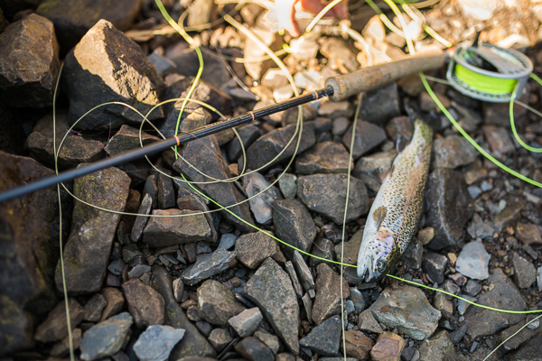
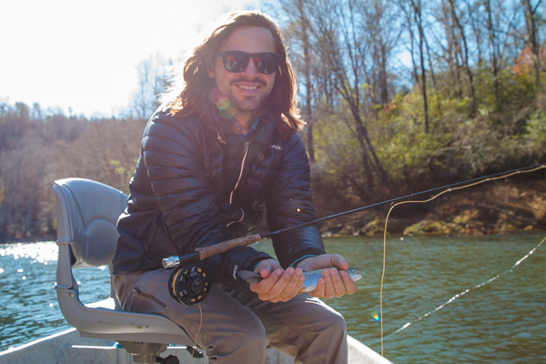
As the sun began to rise overhead, Brandon backed his boat down the ramp right next to his shop and we climbed in to drift with the fish. This was more my style of fishing. As Brandon controlled the boat with a combination of electric motor and oars, we casted our lines into the areas of the river that promised fish. It wasn’t long before, to my amazement, I set the hook into a beautiful little trout. Riverside is a strong advocate of the environment and even though the legal limit is 5 fish per person, we released our catches safely back into the water for others to enjoy. I couldn’t think of a better way to spend a nice day in Alabama than on the water!
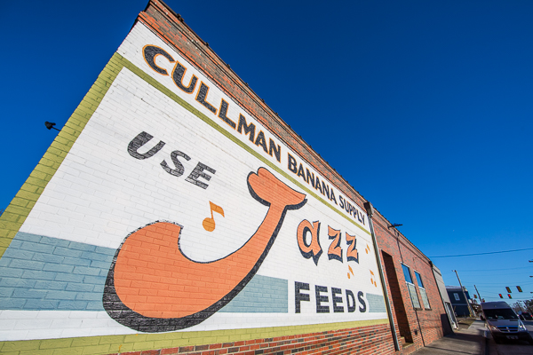
After we’d worked up an appetite on the river, we ventured into the warehouse district of Cullman for some lunch. Just by walking through the area it’s easy to see that this little town has a lot of history and some great local businesses.
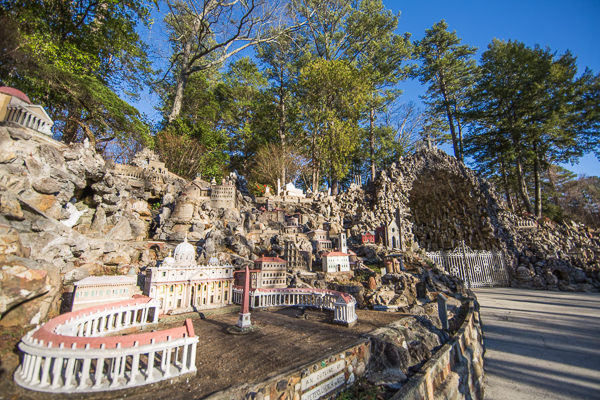
The Grotto is a place that seems to be famous around Cullman, and for good reason. Essentially it’s a ½ mile loop that takes you through a wide array of sculptures made to mimic different locations. The large miniatures range from fantasy (like the Temple of the Fairies) to European cities to Biblical scenes. The creator of The Grotto is Brother Joseph, a monk who lived in the area. By spending anywhere from 30 minutes to 6 hours walking through, you get to see the culmination of his 80 years taken to leave his legacy. By far the most impressive area is the grotto itself, hosting hundreds of clusters of handmade stalactites, encrusted with shells, marbles, and other stones.
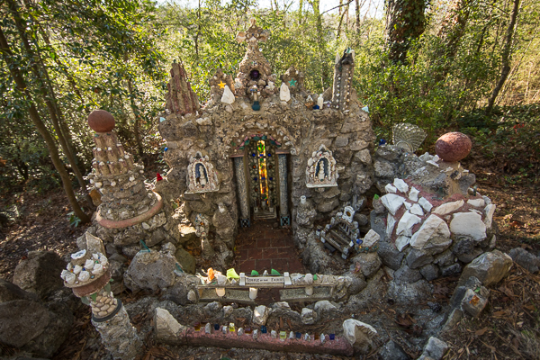
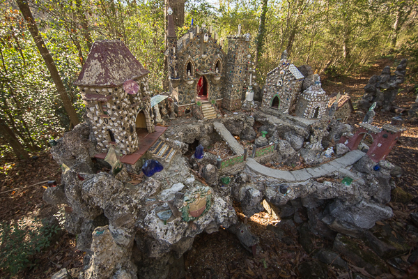
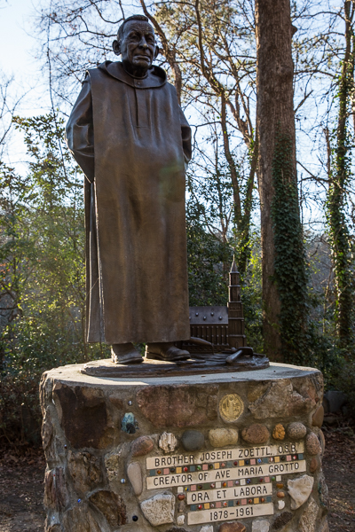
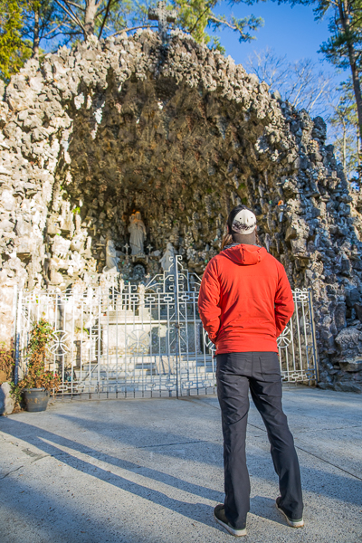
Clearly our first impression of Alabama wasn’t exactly spot on. In February, we missed out on the small-town feel that we were originally hoping for. But we’re thankful we took the time to swing through again and redeem our first experience. Cullman itself is a charming little town — enough going on to stay busy and entertained without being overwhelmed by a bustling city. The southern charm is noticeable in all the local folk we met during our stay.
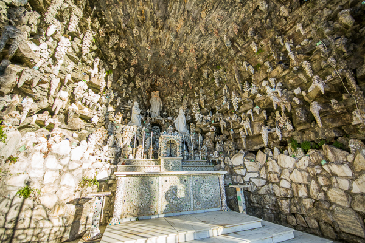
This post is sponsored by Cullman Alabama Chamber of Commerce. The next time you’re looking for a fun getaway, or if you’re passing through, be sure to check them out!